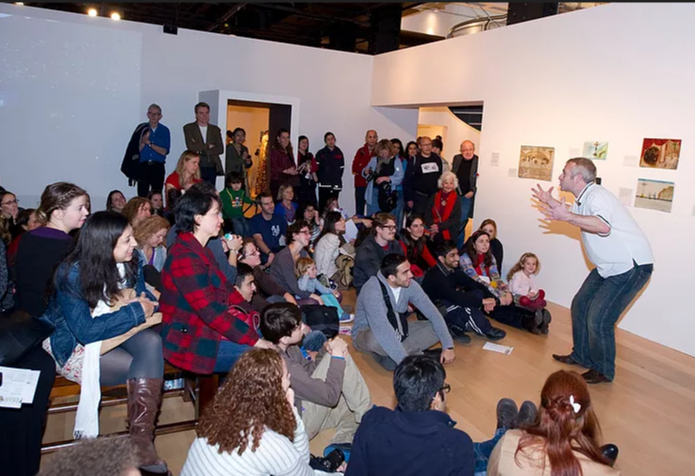
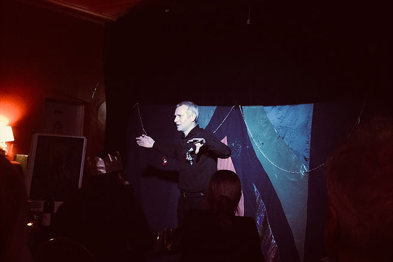
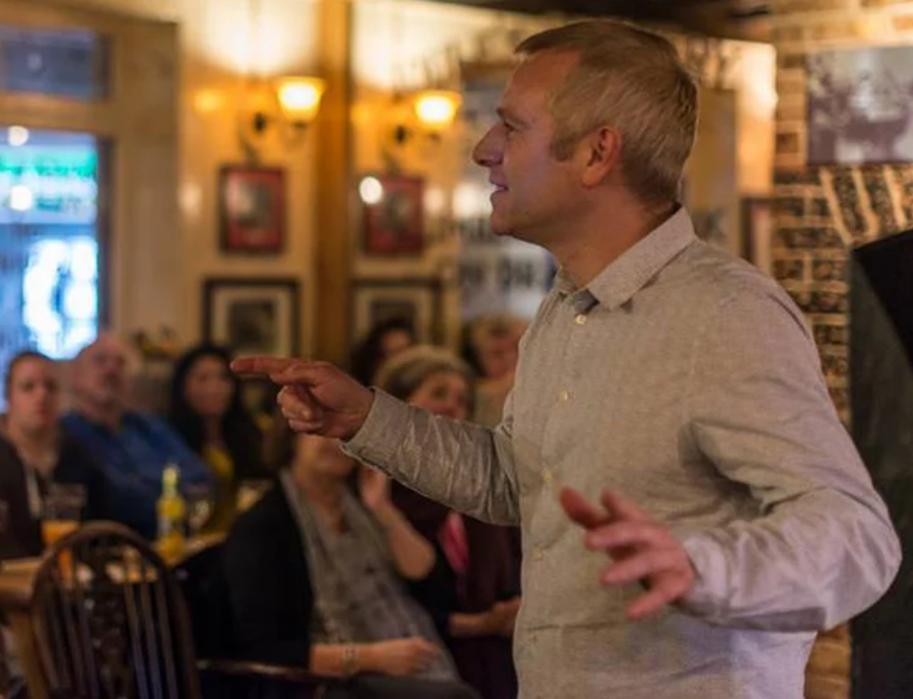

Performances
Telling tall tales all his life
Bullfighting widows and Haunted Cows
Tales from Milpa Alta, Mexico
“Bullfighting Widows and Haunted Cows” is an exploration of the folk tales of Milpa Alta, Mexico. The stories of Mexico are full of heroes and villains; of malevolent spirits and kind ghosts; of innocent victims and scheming priests. Let Mike guide you through these tales, taking care not to lose anyone on the way – por que hay muchas cosas extraños y nuevos, viviendo mas alla..."
Tales from the Milpa Alta at The Wellcome Trust
Performing at the British Museum
The Returned
Sometimes They Come Back
"A man stands by a railway track, watching people crowded on the roof of the train - fleeing poverty and violence, or just visiting loved ones. He is plunged into a reverie, obsessing over home and what it means to those on the roof, and what it means to him, before exploring stories of those desperate to return home - over mountains and rough terrain, through war zones and dangerous ground...and even from beyond the grave."
A Lancashire Hotpot
Tales from the Top
“Mike returns to his northern roots to dig up stories of boggarts, clog fighting gorillas and ghostly undertakers...a mad mix that ranges from the bizarre to the heart breaking."
A lancashire hotpot at Beeston Tales.
Mike with a class telling sharing some Mexican Tales! Olé!
Souvenirs
With Ana Marie Lines
A collaboration with multi-talented Brazilian storyteller Ana Maria Lines, blending world stories with song and dance - something very different and loved by audiences throughout the Midlands.
“Absolutely brilliant. The whole programme fitted together so well. The music and dance complemented the stories so well, especially with another language thrown in! It must have taken so much work. Thanks!”
Twisted Tales for Lovers
Saccharine Hearts
When asked for a Valentine’ s Day performance, Mike decided that an antidote to saccharine hearts, flowers and teddy bears was needed: a friend with a broken heart seeks comfort in tales of love, but the teller struggles to find anything suitable, instead dredging up stories where love comes in the strangest of forms.A sort of Arabian Nights.With cider. <
Mike performing Twisted Tales for Lovers Live
Performing at the British Museum
Strange Encounters
Big Cats, Boggarts and Balderdash
Some years ago, Mike chanced upon one of Derbyshire's mythical big cats. Over the years, listeners to this tale have chosen to think him mad, or drunk, rather than believe him. In an attempt to persuade people of the truth, Mike has delved into the story mine to bring together a collection of even stranger encounters, which make a puma in Dovedale seem as mundane as finding a baguette in a bakery.
Oh Brother...
5 Years Old...
When he was five years old, Mike’s older brother told him that he was really a piglet that had been adopted by his parents, who had felt sorry for the little porker. In a show full of anger, tenderness and humour, Mike reminisces on his turbulent relationship with his brother. He finds reflections, revenge and solace in a fabulous selection of connected stories, from the Mayan hero twins to a platonic ideal of brotherhood from Korea.
"Having growing up with two bothers, Mike helped me to travel back to my childhood. Great evening, loved it."
Mike and His Brother, 5 Years Old

Mike mixing both music and storytelling live.
What else?
No boundries..
Mike is constantly updating and refining his repertoire: food related tales; ghost stories from the American south; Chinese miracle tales...to name but a few. He often uses music and song to reflect the mood of a story, from American blues to Mexican Huapango.